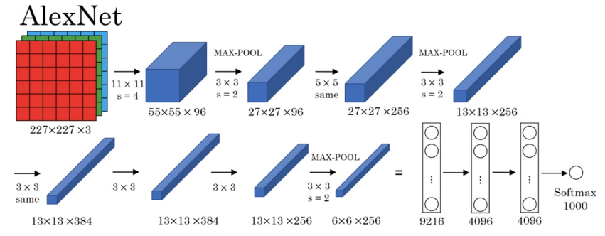
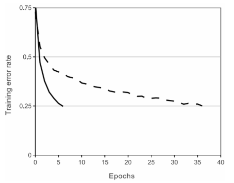
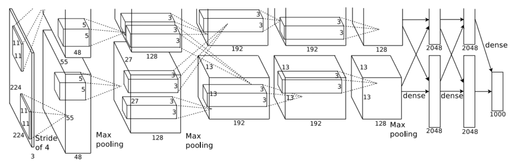

概述
AlexNet为ILSVRC-2012分类竞赛的冠军模型，达到了Top-5 15.32%的错误率。在此之前，计算机视觉方面的问题大都是使用非深度的机器学习方法，而AlexNet则把卷积神经网络带入到广大计算机视觉研究者的视野中。论文出自Hinton带领的小组，第一作者是Hinton的学生Alex，AlexNet也因此得名。
整个模型共分为8层，结构大致为：卷积-池化-卷积-池化-卷积-卷积-卷积-池化-全连接-全连接-全连接（其中卷积-池化看作1层）。模型中还加入了一些如今都在广泛使用的结构如ReLU激活函数和Dropout；也加入了一种类似于批标准化(Batch Normalization)的方法：局部响应归一化(LRN， Local Response Normalization)；比赛中还使用了些许数据增强的方法。
论文：ImageNet Classification with Deep Convolutional Neural Networks
网络详解

说明：由于论文中使用了两个GPU训练，结构图看起来不是特别清晰，所以选择了吴恩达深度学习课程上给出的结构图，且论文中的训练方法也有些特殊，相关介绍会在最后给出。此外，卷积层输出尺寸的计算可以使用公式，其中INPUT_N为输入尺寸，OUTPUT_N为输出尺寸，P为填充尺寸，K为卷积核的尺寸，S为卷积步长。池化层输出尺寸也可用上述公式计算。
各层结构
各层的详细参数上图中已经给出，不重复描述。下面给出各层的详细结构（有些东西并未在图中体现出来）：
-
卷积-LRN-最大池化-ReLU
-
卷积-LRN-最大池化-ReLU
-
卷积-ReLU
-
卷积-ReLU
-
卷积-最大池化-ReLU-Flatten
-
全连接-ReLU-Dropout
-
全连接-ReLU-Dropout
-
全连接-softmax
模型组件
本部分给出几个比较值得一提的模型组件，没有给出的不是因为不重要，而是概念过于常见，没有必要展开叙述。
ReLU
在此之前我们会使用sigmoid或tanh作为模型的激活函数，但对于梯度下降来说，非饱和非线性的函数（如ReLU）要比饱和非线性函数快上许多。下图是论文作者在CIFAR-10数据集上进行的实验，使用了四层卷积的网络结构，其中实线表示ReLU激活函数的收敛过程，虚线表示tanh激活函数的收敛过程，同样是到达0.25的Training error rate，ReLU要比tanh快上6倍左右。且作者还指出，网络结构不同，实验结果也可能不同，但ReLU总是比饱和线性函数快上几倍。

注：对于函数y=f(x)，当时，则称函数f(x)右饱和；当时，则称函数f(x)左饱和。当f(x)同时满足左饱和和右饱和时，则称f(x)为饱和函数。
局部响应标准化(LRN, Local Response Normalization)
对于饱和函数，需要进行标准化来使得输入尽量落在非饱和区域，加快收敛速度。而对于非饱和函数，并没有这种需要，但实验表明LRN仍有助于泛化。LRN的公式为：
其中是对于同一位置，不同卷积核得到的卷积值（以当前核为中心，取前后各个卷积值）的平方进行求和。几个超参数的设置为，这些值是在验证集上得出的。LRN相当于一种局部神经元之间的竞争机制，响应比较大的值会变得相对更大，同时横向抑制响应较小的值，以此提高泛化能力。在ImageNet数据集上，这个方法能减少top-1 1.4%，top-5 1.2%的错误率，在CIFAR-10数据集上能减少2%左右的错误率。
重叠池化
不同于传统的池化，AlexNet中使用的池化层步长小于池化窗口，这就使得池化窗口会出现重叠的情况，这种方法降低了top-1 0.4%和top-5 0.3%的错误率，但是重叠池化可能存在难以拟合的情况。
Dropout
为了防止过拟合，使用了Dropout(0.5)，这种技术降低了神经元之间复杂的“相互协作”，但同时也会减缓拟合速度。
附录：论文中的网络结构

- 论文中的网络结构和前面的网络结构大体相似，但有些细节不同，而且由于使用了双GPU进行运算，网络结构中有些地方也是为了进行并行运算，所以图片看起来有些复杂。上面缺少的部分不是截图少截了，而是论文中的原图就是如此。
- 论文中模型图有个错误，输入尺寸标为224×224×3，但实际上应该是227×227×3，这是如今主流的解释。个人理解为，如果不进行pad，那么输入必须是227×227×3才能与卷积后的尺寸对应；如果令pad=3，那么输入为224×224×3就可以和卷积后尺寸对应。
- 图中的第二层卷积，其输入并不是第一层输出的全部96层特征层，而是每块GPU以自身的48个特征图作为输入，分别运算。图中的第四、五层卷积与第二层卷积相同，都是以自身所在GPU的特征层作为输入，而不是以上一层的全部特征层作为输入。